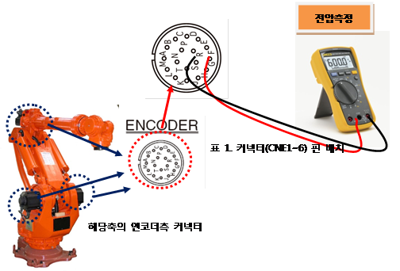
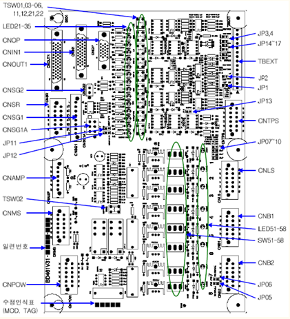
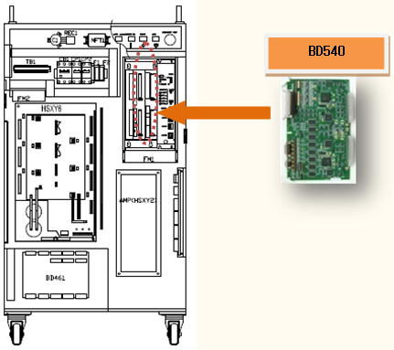
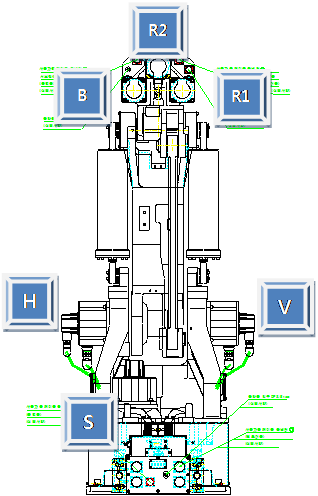
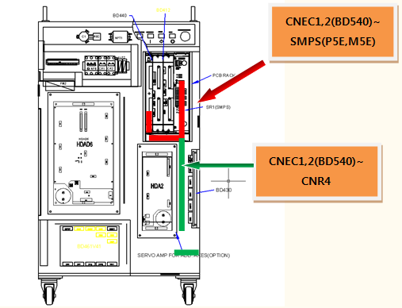
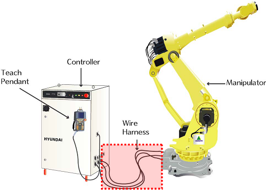
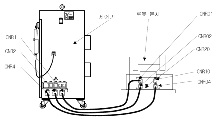
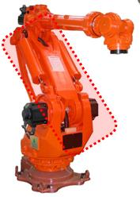

9.1. 개요
서보보드에서 절대치 엔코더 데이터를 수신하지 못하였습니다. 절대치 엔코더 데이터는 제어기 전원 On 시에 수신하고, 최초 모터 On 시에 수신하여 총 2회 수신합니다. 따라서 E0103 에러는 전원 On 초기화시와 최초 모터 On시에만 검지하는 에러입니다. 단, 제어기전원과 무관하게 다른 문제로 인해 CPU보드가 리부팅되면서 초기화를 진행하면서 새로 에러를 검지하는 경우도 있습니다.
9.2. 원인 및 점검방법
|
1. 엔코더 공급전압을 확인하십시오 2. 모터 브레이크가 해제되는지 점검하십시오 3. 서보보드를 교체 시험하십시오 4. 배선을 점검하십시오 5. 모터를 교체 시험하십시오 |
1. 엔코더 공급전압을 확인하십시오.
엔코더에 공급하는 전원전압은 엔코더측 커넥터 공급 전압이 5V±5%
(4.75V ~ 5.25V)범위 내에 있어야 합니다. 엔코더측 커넥터 전압이 4.75V이하로
떨어질 경우, 엔코더가 정상 동작하지 않아, 상기 에러 발생 가능성이 있습니다.
엔코더측 커넥터 pin(G-S)의 전압을 측정해 주십시오.
|
Pin No. |
Function |
Pin No. |
Function |
|
A |
A |
K |
Z |
|
B |
/A |
L |
/Z |
|
C |
B |
M |
NC |
|
D |
/B |
N |
NC |
|
E |
RX |
P |
NC |
|
F |
/RX |
R |
RST |
|
G |
GND |
S |
GND |
|
H |
VCC |
T |
VB |
|
J |
CASE GND |
|
|

그림 5.21 엔코더 입력 전원 측정 방법
측정된 전압이 기준전압보다 낮을 경우 엔코더 전원공급장치의 +5V ADJ(E) 전압조정 단자를 돌려 엔코더측 커넥터 전압이 기준전압 이내가 되도록 조정하십시오.
그림 5.22 엔코더 전원 조정 방법
2. 모터 브레이크가 해제되는지 점검하십시오.
모터 Off 상태에서 BD461 시퀀스보드의 브레이크 스위치를 동작시켜 모터 브레이크가 해제되는지 점검하십시오. 단, 브레이크 해제시 로봇 축이 낙하하므로 충분한 안전조치를 취하고 브레이크 스위치를 재빨리 눌렀다 떼서 로봇축 낙하량을 최소화해야 합니다.

그림 5.23 BD461 보드 외관
TSW03 : 주축(1,2,3축) 브레이크 해제 전원 강제 출력
TSW04 : 수축(4,5,6축) 브레이크 해제 전원 강제 출력
TSW05 : 부가축(7축) 브레이크 해제 전원 강제 출력
TSW06 : 부가축(8축) 브레이크 해제 전원 강제 출력
3. 서보보드를 교체 시험하십시오.
서보 보드를 교체한 후 에러가 발생하지 않으면 서보보드의 불량입니다. 서보 보드를 정상품으로 교체하여 주십시오.

그림 5.24 BD540 서보보드 교체 방법
4. 모터를 교체 시험하십시오.
서보 모터를 교체한 후 에러가 발생하지 않으면 서보모터의 불량입니다. 서보 모터를 정상품으로 교체하여 주십시오. 아래 그림은 HX165 로봇의 각 축 모터의 위치를 나타내고 있으며, 다른 로봇은 해당 기구 보수설명서를 참고하여 교체하시기 바랍니다.

그림 5.25 HX165 로봇의 각 축 모터 위치
5. 배선을 점검하십시오.
엔코더의 배선점검 순서는 다음과 같습니다.
1차 : 엔코더 배선에 관련된 커넥터들의 접촉 불량여부를 점검하십시오.
2차 :
엔코더 배선의 단락 유무를 점검하십시오. 멀티미터(테스터기)와 같은 장비를 이용하여 각 상의 배선을 1:1로 체크하십시오.
3차 : 엔코더 배선을 교체시험 하십시오.
엔코더 배선이 단선되지 않고 쉴드선의 접촉불량, 엔코더 신호선과 타 전력선 또는
로봇 본체 금속부위와의 접촉 등의 현상이 있을 경우에는 단락유무 검사로는 검사할 수 없으므로 배선교체 시험을 하여주십시오.
1) 제어기 내부 배선을 점검하십시오.
■ CNEC1,2(BD540)커넥터와 SMPS(P5E,M5E)간의 배선을 점검하십시오.
■ CNEC1,2(BD540)커넥터와 CNR4간의 배선을 점검하십시오.

그림 5.26 제어기 내부 엔코더 배선
2) 제어기와 로봇간의 배선을 점검하십시오.
■ CNR4와 CNR04간의 배선을 점검하십시오.

그림 5.27 로봇과 제어기간 기본 설치 구성도

그림 5.28 로봇 본체와 제어기의 접속
3) 본체내부의 배선을 점검하십시오.
■ CER1과 CNE1~6(엔코더측 커넥터)간의 배선을 점검하십시오.
배선점검은 로봇 보수설명서의 배선 접속도를 참고하시기 바랍니다.

그림 5.29 로봇 기내 배선